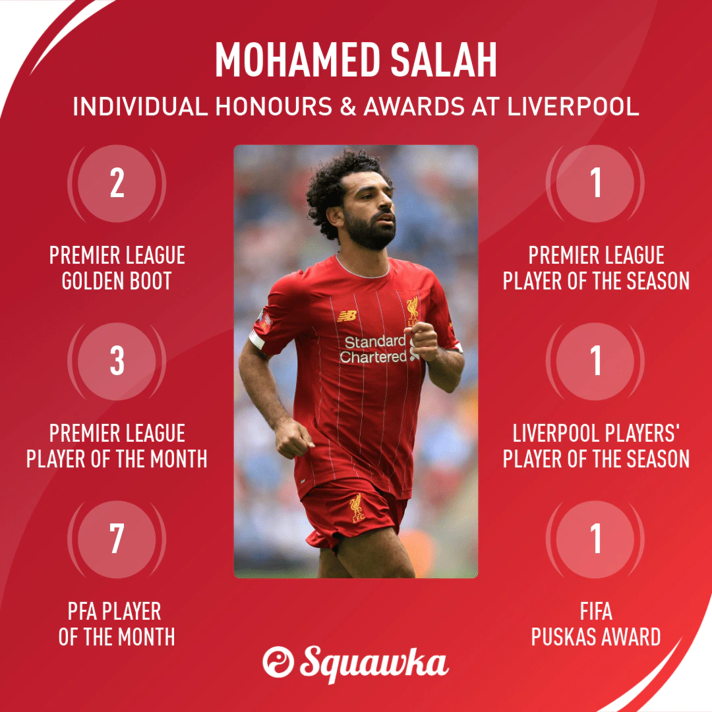

Thông tin cơ bản
Mohamed Salah Ghaly là một cầu thủ bóng đá người Ai Cập hiện đang chơi ở vị trí tiền đạo cánh cho câu lạc bộ Liverpool và là thành viên của Đội tuyển bóng đá quốc gia Ai Cập.
Ngày/nơi sinh: 15 tháng 6, 1992 (28 tuổi), Nagrig, Ai Cập
Chiều cao: 1,75 m
Cân nặng: 71 kg
Vợ: Magi Sadeq (kết hôn 2013)
Đội hiện tại: Câu lạc bộ Bóng đá Liverpool (#11 / Tiền đạo), Đội tuyển bóng đá quốc gia Ai Cập (#10 / Tiền đạo)
Sự nghiệp cầu thủ
Salah bắt đầu sự nghiệp của mình với câu lạc bộ Cairo El Mokawloon tại Giải Ngoại hạng Ai Cập năm 2010, sau đó gia nhập Basel với một khoản phí không được tiết lộ. Ở Thụy Sĩ, anh đóng vai chính khi anh giúp câu lạc bộ giành chức vô địch trong mùa giải đầu tiên, giành giải thưởng Cầu thủ vàng SAFP. Những màn trình diễn của Salah sau đó đã thu hút câu lạc bộ Chelsea và anh ấy đã gia nhập câu lạc bộ với mức phí 11 triệu bảng vào năm 2014. Tuy nhiên, anh ra sân ít hơn trong mùa giải đầu tiên của mình và được cho mượn để tới các câu lạc bộ Serie A là Fiorentina và A.S. Roma, cuối cùng anh ký hợp đồng mua đứt bởi Roma với giá 15 triệu euro.
Sau màn trình diễn xuất sắc ở Rome để đưa họ xếp vị trí thứ hai và kỷ lục điểm giành được năm 2017, Salah trở lại Premier League để ký hợp đồng với Liverpool với mức phí kỷ lục của câu lạc bộ là 36,92 triệu bảng. Trong lần thi đấu thứ hai ở Anh, anh đã điều chỉnh lối chơi của mình từ một cầu thủ chạy cánh tự nhiên thành một tiền đạo hoàn chỉnh và nhanh chóng trở thành tâm điểm của đội. Salah tiếp tục phá vỡ kỷ lục ghi bàn của Premier League trong một mùa giải 38 trận, nhận Chiếc giày vàng Premier League sau khi ghi được 32 bàn thắng trong 36 trận đấu. Màn trình diễn của Salah giúp anh nhận được một số giải thưởng cá nhân, bao gồm Cầu thủ xuất sắc nhất năm của PFA. Anh cũng đứng thứ ba trong giải thưởng Cầu thủ FIFA xuất sắc nhất 2018. Ở mùa giải tiếp theo, anh đã kết thúc với tư cách là cầu thủ ghi bàn hàng đầu của Premier League[a] và giúp câu lạc bộ giành chức vô địch UEFA Champions League.